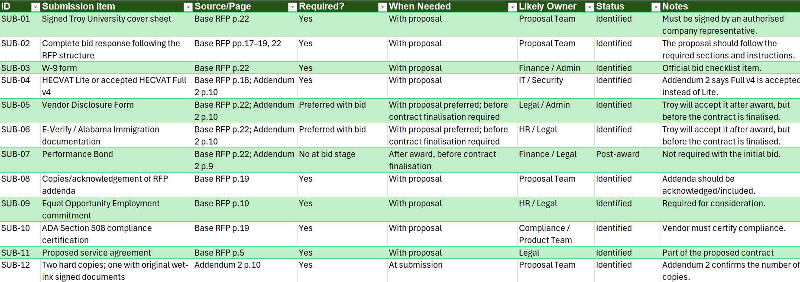
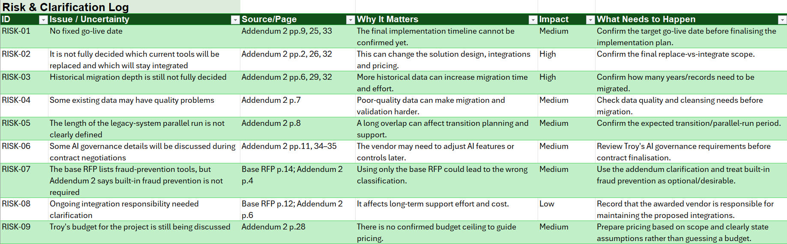

What I wanted to understand
I wanted to understand how analysts break down a complex RFP and make sure important requirements, submission items and uncertainties are not missed before a proposal is prepared.
What I used
How I worked through the RFP.
01 • Read the source documents
I reviewed the base RFP and both official addenda, focusing on the scope, proposal instructions, evaluation criteria and later clarifications.
02 • Built the compliance matrix
I organised the main requirements and recorded their source pages, obligation level, likely owner and the information a real vendor would need to provide.
03 • Added the supporting sheets
I separated submission items, risks and clarifications, source tracking and response planning so each part of the analysis had a clear purpose.
What I created
- Compliance Matrix covering 45 CRM requirements.
- Source Register for the base RFP and official addenda.
- Submission Checklist for proposal documents and delivery requirements.
- Risk & Clarification Log for open, changed and uncertain items.
- Response Plan showing how a real bid could be organised.
- Opportunity Brief and Executive Summary.
What I learned from the project
The project helped me understand how a long procurement document can be broken into smaller requirements and traced back to the source. I also learned to separate confirmed requirements from assumptions and to record missing vendor information instead of guessing it.
A closer look at the workbook.
These screenshots show two of the supporting sheets I created alongside the Compliance Matrix.


How I handled missing information
I did not guess vendor information. Where the RFP required details that only a real vendor could provide, I marked the item as “Vendor input needed” or “Clarification required” instead of making assumptions.